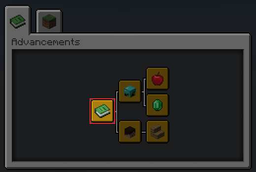

About
Minecraft Datapacks is a community-driven minecraft server about datapacks. This means we need a way to ensure compatibility between many datapacks to create a stable and friendly datapack ecosystem.
How we are going to do it
To achieve this we will use the "programming conventions" method, which we will kindly ask other users to follow to improve compatibility between datapacks. And to do that we need to create a way for users to be able to access these conventions very quickly. and that is the aim of this website.
Contribution
If you wish to contribute to this project you can do it via this Github repository
As of right now, there are 3 types of contribution Grammar Contribution, Tips Contribution and Convention Contribution
- Grammar Contribution is a simple grammar correction pull-request, anyone can make this contribution if they notice grammar errors.
- Tips Contribution is a contribution to a "tips" section of this repository, similar to Grammar Contribution you just need to make a pull-request and wait for approval.
- Convention Contribution is a contribution to the "conventions" section of this repository, to contribute this please read the next section.
Convention Contribution
To contribute to this you must first create an issue with the Convention Suggestion label in this format:
- explanation of the convention.
- explanation on how to implement it.
- explanation of why it should be added.
After that, we will discuss it, modify it, then vote on whether to add it or not. If the vote passed you can then submit a pull-request and wait for approval.
Official Conventions
These are official conventions that everyone must followed for datapack compatibility.
Datapack Advancement (*)
About
This convention aims to generalize the installation message into an easily viewable and non-obstructive way by putting it on a single advancement page.
Preview
This is an example of what this convention will look like

Implementation
The guideline is made up of 3 advancement nodes: Root, Namespace and Datapack
1. Root Advancement
This advancement is the root of all installed datapack's advancements.

You must create this file at /data/global/advancements/root.json.
{
"display": {
"title": "Installed Datapacks",
"description": "",
"icon": {
"item": "minecraft:knowledge_book"
},
"background": "minecraft:textures/block/gray_concrete.png",
"show_toast": false,
"announce_to_chat": false
},
"criteria": {
"trigger": {
"trigger": "minecraft:tick"
}
}
}
2. Namespace Advancement
This advancement indicates the creator of the datapack.

It must be in the same location in every datapacks of yours. I recommend that you put it inside /data/global/advancements/<namespace>.json.
{
"display": {
"title": "<Your name>",
"description": "",
"icon": {
"item": "minecraft:player_head",
"nbt": "{SkullOwner: '<your_minecraft_name>'}"
},
"show_toast": false,
"announce_to_chat": false
},
"parent": "global:root",
"criteria": {
"trigger": {
"trigger": "minecraft:tick"
}
}
}
Note
If you are working on a project with multiple people you can choose to:
- Display this advancement as your own and credit them with other methods.
- Display this advancement with the "team name" of your choice.
- Display a "Standalone Datapack" instead.
3. Datapack Advancement
This advancement is used to display installation information about your datapack. It should be unique among your other datapacks.

You can create this advancement anywhere as long as you don't pollute /data/global/advancements/folder
{
"display": {
"title": "<datapack name>",
"description": "<datapack description>",
"icon": {
"item": "<item>"
},
"announce_to_chat": false,
"show_toast": false
},
"parent": "global:<namespace>",
"criteria": {
"trigger": {
"trigger": "minecraft:tick"
}
}
}
Note
The syntax <...> indicates that you have to replace it with something else!
Extra: Standalone Datapack
This is an optional syntax that you can take to display installed datapack without displaying the creator's information.
To implement this you simply skip the #2: Namespace Advancement step and make sure that in step #3: Datapack Advancement you create your file inside /data/global/advancements/standalone/ directory.
Keep in mind that if you are planning to release more datapacks under this name. You should use the normal syntax over this one.
Datapack Uninstallation (*)
About
This convention ensures that you have a way of uninstalling most of the contents of your datapack. The word "most" is used here because minecraft does not provide the necessary tool for us to actually uninstall or remove the entirety of datapack.
Implementation
There are no rules enforcing how you should implement the uninstallation method as long as you did implement it. But the following section is one of the many ways to implement it.
Uninstallation Function
You can create an "uninstallation function", which when ran, will remove most of the content added from your datapack. You can tell the user about this function inside your project page or anywhere you like.
Common Trait Convention (**)
About
This convention intended to bring the Ore Dictionary system from Forge to datapack's custom item. This is done by utilizing the Item's custom nbt feature. We can insert any kind of nbt inside item which we can use other commands to check/look into it.
With that, we can create a unified lookup system that every datapacks can use to search for a specific item they want. You can then use the Common Trait Convention's provided syntax to construct a search function to find the item you need.
Example Usage
It can be hard to visualize how this convention would be useful in the real world, so we compile some useful usage that would not be possible without this convention.
- Suppose you added a
custom furnacewhich let you smelt copper ore into ingots. With this convention, you can detect for any copper ore from any datapacks to smelt it. - Suppose you added a
fridgewhich only accept food items, with this convention you can detect for any food items even the custom ones from other datapack. - Suppose you added a
custom anvilwhich lets you repair tools straight from the material instead of the ingot, with this convention you can detect any kind of material from other datapacks even when the base material doesn't match.
Traits
Traits are behavior and properties that an object can have. By specifying these traits inside the item's nbt. Other datapacks will be able to refer to that item via traits instead of item id directly.
Traits is an array of strings and so will look like this in nbt (notice traits: [...]?)
/give @s diamond{ctc: {traits: ["some", "trait", "here"], id: "example", from: "convention:wiki"}}
Syntax
Common Trait Convention's syntax will be stored inside ctc nbt of item. insidectc contains: id, from and traits nbts.
id: internal id of your item, this should not be used outside of your datapack but should be unique within your datapack.from: a namespace specifying which datapack is the item comes from.traits: an array of traits that you can use to refer to items outside of your datapack.
We will assume the following syntax is the NBT structure of /give command
{
ctc: {
id: "my_copper_ore",
from: "convention:wiki",
traits: ["metal/copper", "block", "ore"]
}
}
Let's look at traits nbt
metal/copper, this trait tells us that this item is copper.block, this trait tells us that this item is a placeable block.ore, this trait tells us that this item is an ore.
Slash Notation
In the above example, you will notice the use of / in metal/copper, this is used when the trait alone can be ambiguous. For example, what does the trait orange mean? is it the color orange or the fruit orange?
In such case we'll use slash notation to separate them. color/orange and fruit/orange
Usage
To detect or check for trait items you just need to check for traits nbt of the item.
Detect if the player is holding a weapon
execute as @a if entity @s SelectedItem.tag.ctc{traits: ["tool/weapon"]} run ...
Detect if the container contains copper ore
execute if block ~ ~ ~ Items[].tag.ctc{traits: ["metal/copper", "ore"]} run ...
Detect if the container contains a placeable item
execute if block ~ ~ ~ Items[].tag.ctc{traits: ["block"]} run ...
Basic Traits
This is a provided list of traits that you can use, this doesn't mean you can't create new traits for your own use but if there is a trait that suits your need in this you should use it instead.
The list is split into multiple groups and you should not use traits from the same group twice.
Object Type Group
This trait represents the state of matter that this item holds.
| Trait | Description |
|---|---|
| gas | Gaseous substance |
| liquid | Liquid substance |
| block | Placeable item |
| item | Normal minecraft item |
Special Type Group
This trait represents common behavior from modded minecraft, this should help with integrating your pack into this convention.
This group is an exception to the rule above, you can use multiple traits from this group as much as you like.
| Trait | Description |
|---|---|
| ore | Ore block that can usually be found in cave |
| seed | Item that can be used to grow plant |
| flower | Flower item |
| grass | Block that can spread from one block to another |
| sapling | Block that can grow into tree |
| vegetable | Food item that comes from seed |
| log | Item that drops from tree |
| planks | Item that come from processing log |
Compression Group
This trait represents an item that can be combined to create a more compact version of itself and vice versa
For example:
redstone dust->redstone blockice->packed iceiron block->iron ingot
| Trait | Description |
|---|---|
| packed | Most packed form of item, usually be a block form of this item |
| ingot | Normal form of item, usually be an ingot form of this item |
| nugget | Smallest form of item, usually be a nugget form of this item |
Edible Group
This trait represents an edible item that can be used by the player (drinking included)
| Trait | Description |
|---|---|
| food | All types of edible item |
Armor Group
This trait represents an item that can be worn by players and other entities
| Trait | Description |
|---|---|
| armor | All types of wearable item |
Tool Sub-group
This trait use Slash Notation!
This trait represents an item that can be used to interact with the world.
| Trait | Description |
|---|---|
| tool/mining | This item can be used to mine a stone block and other related blocks |
| tool/chopping | This item can be used to cut trees and wood material |
| tool/tilling | This item can be used to till the soil |
| tool/watering | This item can be used to water the soil |
| tool/weapon | This item can be used to fight monsters and other players |
Gem Sub-group
This trait use Slash Notation!
This trait represents any item that has a crystalline structure.
| Trait | Description |
|---|---|
| gem/diamond | Diamond gemstone |
| gem/ruby | Ruby gemstone |
| gem/emerald | Emerald gemstone |
| gem/sapphire | Sapphire gemstone |
| gem/prismarine | Prismarine |
| gem/lapis | Lapis Lazuli gemstone |
| gem/obsidian | Any Obsidian material |
| gem/quartz | Any Quartz material |
| gem/opal | Opal gemstone |
Metal Sub-group
This trait use Slash Notation!
This trait represents the metallic items that are often added by mods
| Trait | Description |
|---|---|
| metal/iron | Item that made up of iron |
| metal/gold | Item that made up of gold |
| metal/copper | Item that made up of copper |
| metal/aluminium | Item that made up of aluminium |
| metal/tin | Item that made up of tin |
| metal/silver | Item that made up of silver |
| metal/lead | Item that made up of lead |
| metal/nickle | Item that made up of nickle |
| metal/platinum | Item that made up of platinum |
Reference
Custom Model ID (***)
About
This convention aims to reduce conflict within the custom model data system as much as possible by assigning a unique id for every creator to use.
1. Register your id
"id" is an integer between 1-999 which we'll use to uniquely namespaced custom model data to prevent conflict between resourcepacks.
You can register your id at https://mc-datapacks.web.app.
2. Prefix your model with your id
You will prefix your custom model data with your id in this format where XXX is your ID and 0000 is any custom model data that fits within 4 digits.
| id | cmd |
|---|---|
| XXX | 0000 |
Here are some examples:
2.1. id = 42
{
"overrides": [
{"predicate": {"custom_model_data": 420001}, "model": "path/to/model/1"},
{"predicate": {"custom_model_data": 420020}, "model": "path/to/model/2"},
{"predicate": {"custom_model_data": 420300}, "model": "path/to/model/3"}
]
}
2.2. id = 808
{
"overrides": [
{"predicate": {"custom_model_data": 8081001}, "model": "path/to/model/1"},
{"predicate": {"custom_model_data": 8082002}, "model": "path/to/model/2"},
{"predicate": {"custom_model_data": 8083003}, "model": "path/to/model/3"}
]
}
2.3. id = 1
{
"overrides": [
{"predicate": {"custom_model_data": 10001}, "model": "path/to/model/1"},
{"predicate": {"custom_model_data": 10010}, "model": "path/to/model/2"},
{"predicate": {"custom_model_data": 10011}, "model": "path/to/model/3"}
]
}
Global Ignoring Tag (***)
About
This convention provides a way for datapack to communicate with each other by specifying entity tags other datapacks can then look for. This is used heavily to prevent other datapacks from killing/removing custom entities from the world unexpectedly.
There are currently 4 ignoring tags: global.ignore, global.ignore.pos, global.ignore.gui, global.ignore.kill
1. global.ignore.kill
Any entity with this tag must not be killed by other datapack. This includes but not limited to /kill command.
execute as @e[type=creeper, tag=!global.ignore.kill] run kill @s
2. global.ignore.gui
Any entity with this tag must not display visual effects around them. This includes but not limited to /title, /particle, /playsound commands.
execute as @a[tag=!global.ignore.gui] at @s run title @s actionbar [{"text": "Hello, World!", "color": "green"}]
3. global.ignore.pos
Any entity with this tag must not be moved from where it was. This includes but not limited to /tp, /teleport commands.
execute as @e[type=witch, tag=!global.ignore.pos] at @s run tp @s ~ ~0.1 ~
4. global.ignore
Any entity with this tag must not be included in the entity selector at all, you can also think of this tag as a combination of every ignoring tags above.
execute as @e[tag=!global.ignore] at @s run function namespace:internal/logic/function
Note
The convention only applies if your function will change NBT of an unknown entity. if you are trying to change NBT of known entity (i.e. an entity with a special tag attached) you don't need to follow this convention.
Shulker Box Loot Table (***)
About
This convention aims to make Shulker Box Inventory Manipulation as conflicted-free as possible by enforcing a specific loot table for minecraft:yellow_shulker_box block.
Implementation
Simply use this loot table inside /data/minecraft/loot_tables/blocks/yellow_shulker_box.json when you want to use the Inventory Manipulation trick.
{
"type": "minecraft:block",
"pools": [
{
"rolls": 1,
"entries": [
{
"type": "minecraft:alternatives",
"children": [
{
"type": "minecraft:dynamic",
"name": "minecraft:contents",
"conditions": [
{
"condition": "minecraft:match_tool",
"predicate": {
"nbt": "{drop_contents: 1b}"
}
}
]
},
{
"type": "minecraft:item",
"functions": [
{
"function": "minecraft:copy_name",
"source": "block_entity"
},
{
"function": "minecraft:copy_nbt",
"source": "block_entity",
"ops": [
{
"source": "Lock",
"target": "BlockEntityTag.Lock",
"op": "replace"
},
{
"source": "LootTable",
"target": "BlockEntityTag.LootTable",
"op": "replace"
},
{
"source": "LootTableSeed",
"target": "BlockEntityTag.LootTableSeed",
"op": "replace"
}
]
},
{
"function": "minecraft:set_contents",
"entries": [
{
"type": "minecraft:dynamic",
"name": "minecraft:contents"
}
]
}
],
"name": "minecraft:yellow_shulker_box"
}
]
}
]
}
]
}
Reference
Style Guideline
This is currently working in progress.
You can read a draft version here
Certified Datapacks
-
Datapack that has followed a bare metal Tier 3 conventions are allowed to use this banner

-
Datapack that has followed Tier 3 conventions and various style-related conventions defined in the Style Guideline section can use this banner.

Certified Datapacks have a benefit of knowing that your datapack will be compatible with other datapacks.
Requirement
Datapack must satisfy these requirements to receive Certified Datapack title
- Datapack must be portable, it must not be tied down to a specific save.
- Datapack must follow all of Tier 3 Conventions.
Note
- We may rule a datapack out at our discretion, for reasons we would then specify.
- This requirement is not final and can be changed in the future.
Tips
Various tips and tricks for developing datapack.
Enum Scoreboard
You can use a fake player to represent a state of your scoreboard instead of using the number directly. This makes your code more verbose and increases maintainability for the future.
Declaring enum
scoreboard players set #state.idle bb.enum 1
scoreboard players set #state.foo bb.enum 2
scoreboard players set #state.bar bb.enum 3
The enum can hold any value that you want as long as it's unique, we only care about the existence of the fake player itself.
Using enum state
execute if score @s bb.state = #state.idle bb.enum run function <idle_state>
execute if score @s bb.state = #state.running bb.enum run function <running_state>
execute if score @s bb.state = #state.stopping bb.enum run function <stopping_state>
Here we check the state of @s and run appropriate function that must only be run in that state.
Shulker Box Inventory Manipulation
About
This technique allows us to manipulate the player's inventory just like any NBT using the shulker box's loot table.
Concept
We take advantage of the fact that the shulker box can be configured to drop their content on the ground instead of a shulker box containing its content, which can then be used by /loot command to replace the player's inventory.
Implementation
1. To follow with the Official Conventions you will have to modify the loot table of minecraft:yellow_shulker_box to the loot table below. The loot table will drop its content on the ground when it's mined by an item with NBT {drop_contents: 1b}
2. Create a placeholder shulker box that you will use to modify the player's inventory. Usually, this should be placed far away from player view but for simplicity's sake. I'll place it at ~ ~ ~.
setblock ~ ~ ~ minecraft:yellow_shulker_box
3. You need to clone the player's inventory into some sort of NBT buffer, you can clone this into a data storage since they are faster.
data modify storage <storage> inventory set from entity <player> Inventory
4. Due to a limited number of slots inside the shulker box, You have to process the nbt in "batch" the easiest way to organize this batch can be done by splitting it into "hotbar", "inventory", "armor" and "offhand" batch.
4.1. Create each batch using these commands.
|--- Batch name |---- Slot number
data modify storage <storage> batch.hotbar append from storage <storage> inventory[{Slot: 0b}]
data modify storage <storage> batch.hotbar append from storage <storage> inventory[{Slot: 1b}]
data modify storage <storage> batch.hotbar append from storage <storage> inventory[{Slot: 2b}]
.
.
.
// Don't forget to remove `Slot` nbt from the item before moving to the next step!
data remove storage <storage> batch.hotbar[].Slot
4.2. Modify the NBT of each item however you like it to be.
5. Copy the nbt from the previous step into the shulker box and then replace the player's inventory.
data modify block ~ ~ ~ Items set from storage <storage> batch.hotbar
loot replace entity <player> hotbar.0 9 mine ~ ~ ~ iron_pickaxe{drop_contents: 1b}
data modify block ~ ~ ~ Items set from storage <storage> batch.inventory
loot replace entity <player> inventory.0 27 mine ~ ~ ~ iron_pickaxe{drop_contents: 1b}
data modify block ~ ~ ~ Items set from storage <storage> batch.armor
loot replace entity <player> armor.feet 4 mine ~ ~ ~ iron_pickaxe{drop_contents: 1b}
data modify block ~ ~ ~ Items set from storage <storage> batch.offhand
loot replace entity <player> weapon.offhand 1 mine ~ ~ ~ iron_pickaxe{drop_contents: 1b}
Note: Notice the slots I used in each /loot command?
6. Cleaning up
setblock ~ ~ ~ minecraft:air
data remove storage <storage> batch
data remove storage <storage> inventory
Note
In this example, I assume that you need to modify NBT of all available slots but if you want to modify only items in your hotbar then you don't need to use "inventory", "armor" and "offhand" batch.
Holding Right Click Detection
About
This method allow you to detect when player is "holding" right click using carrot on a stick.
Note: I will be referring to "carrot on a stick" as "coas" from now on
Result
A simple spell casting system where a spell will be casted when player hold right click for a period of time

Concept
To detect when player is holding right click you need to know when player right click coas twice within a time threshold.
Because Minecraft takes in coas input every 4 tick, a right click is considered continuous if it's performed within 5 ticks of another click.
Implementation
1. Setup scoreboard objectives
#[setup]
#> This objective is used for detecting when player is right clicking.
scoreboard objectives add <coas> minecraft.used:minecraft.carrot_on_a_stick
#> This objective is always more than 0 when player is holding right click
#> We can use this to detect when player is holding right click
scoreboard objectives add <timer> dummy
2. Detect right click
#[main]
execute if score @s <coas> matches 1.. run function [coas/reset_timer]
3. Detect holding right click
#[main]
# Decrease <timer> by one until it hits 0
scoreboard players remove @s[scores={<timer>=1..}] <timer> 1
# If <timer> is more than 0, we know that the player have right clicked within the last 5 ticks.
# (Since <timer> decrease by 1 every tick and every time a right click is performed <timer> is set to 5 again.)
execute if score @s <timer> matches 1.. run say Player is Holding Right Click!
#[coas/reset_timer]
# Set <timer> to 5 and <coas> to 0
scoreboard players set @s <timer> 5
scoreboard players set @s <coas> 0
5. Conclusion
If <timer> is more than 0, we know that the player have right clicked within the last 5 ticks since <timer> decrease by 1 every tick and every time a right click is performed <timer> is set to 5 again.
We can use execute if score @s <timer> matches 1.. to know if <timer> is more than or equal to 1.
Note
<...>is a placeholder value that you have to replace with your own value.[...]is a placeholder path to display relationship between each functions.
Example Datapack
You can download the example datapack here.
This example pack contains extra code used to display the title message to player.
Happy Datapacking!
- Cocoon